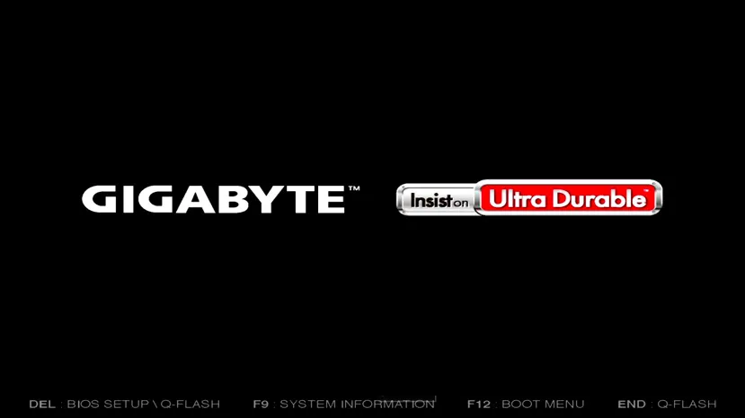
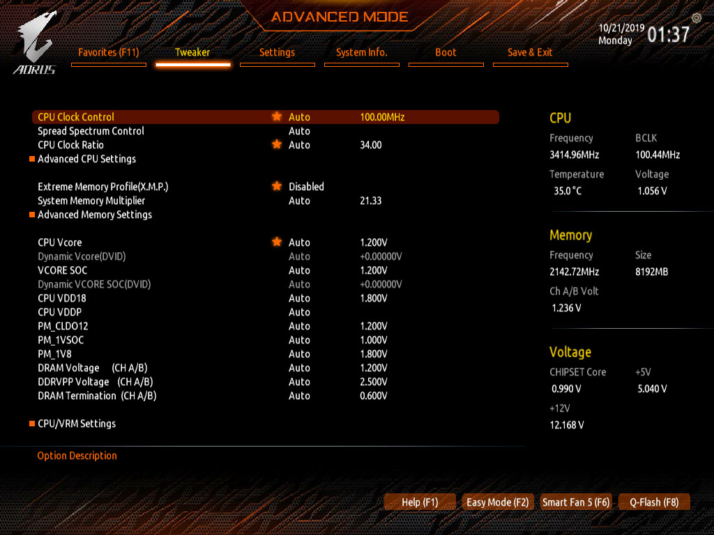
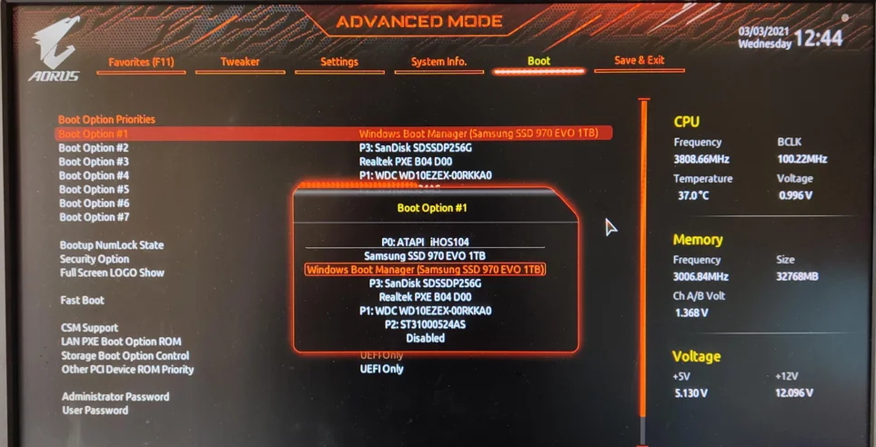

Aprende a crear USBs booteables, conoce las herramientas y cómo acceder a la BIOS.
USB (Universal Serial Bus) es un tipo de almacenamiento portátil que se conecta al puerto USB de la computadora. Sirve para:
Un USB booteable es un dispositivo que contiene un sistema operativo o una herramienta de arranque que permite iniciar la computadora desde él, en lugar del disco duro interno. Se usa para:
Para crear un USB booteable necesitas:
Una imagen ISO es un archivo que contiene una copia exacta de un disco (CD, DVD o Blu-ray). Incluye todos los archivos, carpetas y estructura de arranque necesarios para instalar un sistema operativo o ejecutar una herramienta.
Ejemplos de ISO:
Un Sistema Operativo (SO) es el software principal que gestiona el hardware y permite que otros programas funcionen. Es el puente entre el usuario y la máquina.
El más usado en entornos educativos y empresariales. Fácil de usar, compatible con muchos programas.
Gratuito, seguro y altamente personalizable. Ideal para servidores y desarrollo, pero con curva de aprendizaje.
| Característica | Windows | Linux |
|---|---|---|
| Costo | Pago (licencia) | Gratuito (open source) |
| Facilidad de uso | Muy fácil, interfaz intuitiva | Curva de aprendizaje, pero mejorando |
| Software compatible | Gran variedad (incluido Office) | Muchas alternativas gratuitas (LibreOffice, GIMP) |
| Seguridad | Más vulnerable a virus | Más seguro por su estructura |
| Personalización | Limitada | Altamente personalizable |
| Uso recomendado | Usuarios generales, oficinas, educación | Desarrolladores, servidores, entusiastas |
Ambos SO pueden instalarse desde un USB booteable.
Rufus es una herramienta ligera y rápida para crear USBs booteables a partir de imágenes ISO. Es muy popular por su sencillez y eficacia.
Ventoy es una herramienta innovadora que permite tener múltiples ISOs en un mismo USB y elegir cuál arrancar desde un menú al inicio.
Para arrancar desde un USB, debes entrar a la BIOS/UEFI de tu computadora y cambiar el orden de arranque o seleccionar el dispositivo.
Aquí tienes un recorrido visual del proceso:

Presiona la tecla indicada (F2, Del, etc.) durante el arranque para ingresar a la BIOS/UEFI.

Una vez dentro, verás la pantalla principal de la BIOS. Busca la sección de arranque (Boot).

En la sección Boot, selecciona el USB como primer dispositivo de arranque. Guarda los cambios (F10) y reinicia.
Las imágenes son referenciales; la apariencia varía según el fabricante.
USB sirve para almacenar y bootear SO.
ISO es la imagen del disco que se graba en el USB.
BIOS permite cambiar el orden de arranque.
Rufus – simple y rápido para una ISO.
Ventoy – múltiples ISOs en un solo USB.
🎯 Actividad sugerida: Descarga una ISO de Linux (Ubuntu) y crea un USB booteable con Rufus o Ventoy. Prueba arrancar desde él en tu computadora (puedes hacerlo sin instalar, en modo Live).
¡Felicidades! Has completado todas las lecciones.